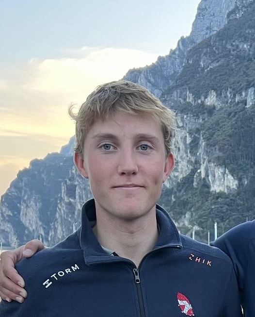

Gustav brings tactical brilliance and quick decision making to the back of the boat. Steering the 49er requires a mix of aggressive maneuvering and professional patience.
Results
- Gold at the U23 World Championship in 49erFX mixed (2025)
- Led the entire Danish Olympic selection for Paris 2024 after the first of two events
- 29er: European Championship bronze two years in a row, as helm and as crew
- Zoom8: silver at the World and European Championships